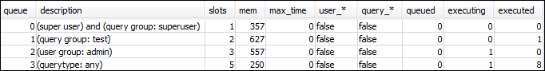

Le traduzioni sono generate tramite traduzione automatica. In caso di conflitto tra il contenuto di una traduzione e la versione originale in Inglese, quest'ultima prevarrà.
Sezione 3: instradamento delle query alle code in base ai gruppi di utenti e ai gruppi di query
Ora il tuo cluster è associato a un nuovo gruppo di parametri e hai configurato WLM. Successivamente, eseguire alcune query per vedere come Amazon Redshift le instrada sulle code per l'elaborazione.
Fase 1: visualizzazione della configurazione delle code di query nel database
Verificare che la configurazione WLM del database sia quella prevista.
Per visualizzare la configurazione delle code di query
-
Apri RSQL ed esegui la query seguente. La query utilizza la vista WLM_QUEUE_STATE_VW creata in Fase 1: creazione della vista WLM_QUEUE_STATE_VW. Se prima del riavvio del cluster al database è già connessa una sessione, sarà necessario riconnetterla.
select * from wlm_queue_state_vw;Di seguito è riportato un risultato di esempio.

Confronta questi risultati on quelli ricevuti in Fase 1: creazione della vista WLM_QUEUE_STATE_VW. Come puoi notare, ora sono presenti due code aggiuntive. La coda 1 ora è la coda per il gruppo di query di verifica, mentre la coda 2 è quella per il gruppo di utenti amministratori.
La coda 3 è quella predefinita. L'ultima coda nell'elenco è sempre la coda predefinita. Si tratta della coda a cui vengono instradate le query se non è specificato un gruppo di utenti o di query.
-
Esegui la query seguente per verificare che venga eseguita nella coda 3.
select * from wlm_query_state_vw;Di seguito è riportato un risultato di esempio.

Fase 2: esecuzione di una query tramite la coda del gruppo di query
Per eseguire una query tramite la coda del gruppo di query
-
Eseguire la seguente query per instradarla al gruppo di query
test.set query_group to test; select avg(l.priceperticket*s.qtysold) from listing l, sales s where l.listid <40000; -
Dall'altra finestra RSQL esegui la query seguente.
select * from wlm_query_state_vw;Di seguito è riportato un risultato di esempio.

La query è stata instradata al gruppo di query di verifica, che ora è la coda 1.
-
Seleziona tutto nella vista dello stato della coda.
select * from wlm_queue_state_vw;Sarà visualizzato un risultato simile al seguente.

-
Reimposta il gruppo di query ed esegui nuovamente la query lunga:
reset query_group; select avg(l.priceperticket*s.qtysold) from listing l, sales s where l.listid <40000; -
Eseguire le query sulle viste per vedere i risultati.
select * from wlm_queue_state_vw; select * from wlm_query_state_vw;Di seguito sono riportati i risultati di esempio.


Il risultato dovrebbe indicare che la query è ora nuovamente in esecuzione nella coda 3.
Fase 3: creazione di un utente e un gruppo di database
Prima di poter eseguire una query in questa coda, dovrai creare il gruppo di utenti nel database e aggiungere un utente al gruppo. Quindi accederai con RSQL utilizzando le nuove credenziali utente ed eseguirai le query. Per creare utenti di database, è necessario eseguire le query come utente con privilegi avanzati, ad esempio l'amministratore.
Per creare un nuovo gruppo di utenti e un nuovo utente di database
-
Nel database crea un nuovo utente di database denominato
adminwlmeseguendo il comando seguente in una finestra RSQL.create user adminwlm createuser password '123Admin'; -
Quindi eseguire i comandi seguenti per creare il nuovo gruppo di utenti e aggiungervi il nuovo utente
adminwlm.create group admin; alter group admin add user adminwlm;
Fase 4: esecuzione di una query tramite la coda del gruppo di utenti
Successivamente eseguirai una query e la instraderai alla coda del gruppo di utenti. Questa operazione viene eseguita quando si intende instradare la query a una coda configurata per gestire il tipo di query che si desidera eseguire.
Per eseguire una query tramite la coda del gruppo di utenti
-
Nella finestra RSQL 2 esegui le query seguenti per passare all'account
adminwlmed esegui una query con questo account.set session authorization 'adminwlm'; select avg(l.priceperticket*s.qtysold) from listing l, sales s where l.listid <40000; -
Nella finestra RSQL 1 esegui la query seguente per vedere la coda a cui vengono instradate le query.
select * from wlm_query_state_vw; select * from wlm_queue_state_vw;Di seguito sono riportati i risultati di esempio.

La coda in viene eseguita questa query è la 2, ovvero la coda dell'utente
admin. Le query che esegui avendo effettuato l'accesso come questo utente verranno seguite nella coda 2, a meno che non specifichi un gruppo di code diverso da utilizzare. La coda scelta dipende dalle regole di assegnazione delle code. Per ulteriori informazioni, consulta Regole di assegnazione delle code WLM. -
Ora esegui la query seguente dalla finestra RSQL 2.
set query_group to test; select avg(l.priceperticket*s.qtysold) from listing l, sales s where l.listid <40000; -
Nella finestra RSQL 1 esegui la query seguente per vedere la coda a cui vengono instradate le query.
select * from wlm_queue_state_vw; select * from wlm_query_state_vw;Di seguito sono riportati i risultati di esempio.


-
Al termine, reimposta il gruppo di query.
reset query_group;